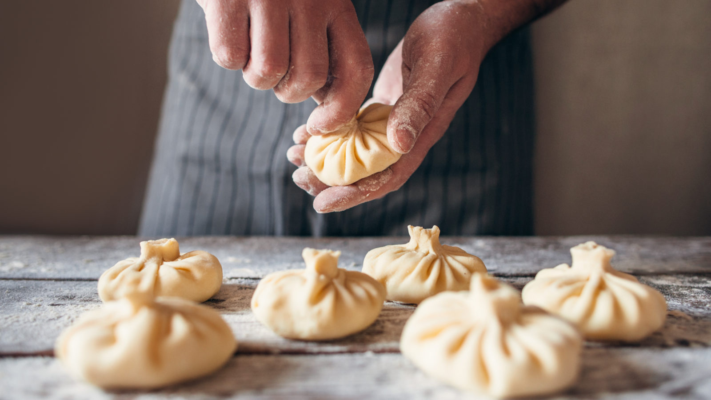

Пошаговый рецепт с фото
ЭНЕРГЕТИЧЕСКАЯ ЦЕННОСТЬ НА ПОРЦИЮ
| КАЛОРИЙНОСТЬ | БЕЛКИ | ЖИРЫ | УГЛЕВОДЫ |
| 1100 ККАЛ |
50 ГРАММ |
44 ГРАММ |
130 ГРАММ |
ИНГРЕДИЕНТЫ
| Пшеничная мука | 500 г |
| Вода | 300 мл |
| Соль | 1,5 чайной ложки |
| Телятина | 250 г |
| Говядина | 250 г |
| Сало | 100 г |
| Репчатый лук | 100 г |
| Чеснок | 2 зубчика |
| Молотый кумин (зира) | по вкусу |
| Красный перец чили | по вкусу |
| Кинза | по вкусу |
ИНСТРУКЦИЯ ПРИГОТОВЛЕНИЯ
Шаг 1. В фарш проворачивается очищенное от жил мясо — грудинка или задок молодой особи. Затем добавляется сало, мелко нарубленные лук и чеснок. В конце вмешивается вода — столько, сколько фарш сможет впитать, не разделяясь на мясную и водную фракции. На полкило мяса — примерно 150 мл. По вкусу можно добавить соль, зиру, острый перец (можно приготовить самостоятельно) и кинзу.
Шаг 2. Замесить тесто из муки, соли и 150 мл воды — достаточно плотное и тугое. Замешивать и раскатывать его вручную будет трудно — поэтому если у вас есть тестомес и особенно тестораскаточная машинка, они очень облегчат процесс. Тесто может храниться в прохладном месте не более часа, потом начинает стремительно терять благородные качества.
Шаг 3. Успех будущих хинкали зависит от количества слоев в тесте: в идеале их должно быть около двадцати. Для этого надо раскатать тесто скалкой в сантиметровый слой и нарезать его квадратами 4×4 см. Каждый кусочек нужно раскатывать и складывать, через раз посыпая мукой, снова и снова — хотя бы 10 раз. Результатом должны стать слоеные листы 3 мм толщиной.
Шаг 4. Фарш готовится заранее, поскольку как только листы теста будут готовы, заворачивать в них мясо нужно немедленно, чтобы тесто не сохло. В середину каждого листа положить по маленькому половнику фарша, примерно 40 грамм. Если на фарше успела проступить вмешанная вода, перед тем как выкладывать на тесто, его нужно еще раз хорошенько перемешать до однородности.
Шаг 5. Края листа складываются гармошкой как можно плотнее. В идеальном хинкали девятнадцать складок.Скрепленный мешочек взять в одну руку, а другой закрутить в ту же сторону, что делались складки, и оторвать излишек теста — у хинкали сверху получится плотный пенек. Поставить хинкали на доску, чтобы у него образовалось плоское дно, которое потом удобно будет надкусывать.
Шаг 6. Лопаткой раскрутить бурно кипящую воду в просторной кастрюле, посолить, забросить десяток хинкали и снова сделать в кастрюле водоворот. Смысл в том, чтобы хинкали не жались и не прилипали друг к другу или ко дну. Варить, пока хинкали не всплывут вверх брюхом. Плюс еще две-три минуты, — всего около десяти минут. Вынимать бережно — шумовкой.
Шаг 7. Улов выкладывается на блюдо. Как правило, варят количество, кратное десяти, каждую следующую порцию готовят заново. Финальный жест перед началом трапезы — посыпание еще влажных, дымящихся хинкали свежемолотым черным перцем, что сразу высвобождает из них правильный дух. К еде приступают немедленно.
Шаг 8. Хинкали едят руками: вилка проколет тесто — и бульон, самый сок хинкали, выльется на тарелку. Рукой надо взять хвост, второй — придерживать ребра; надкусить бок сверху и высосать бульон. Затем есть, кусая тесто и мясо в равных долях, так чтобы кусочек мяса постоянно покоился в лодочке теста. По хвостикам будут считать в конце число съеденных штук.
ПРИЯТНОГО АППЕТИТА!